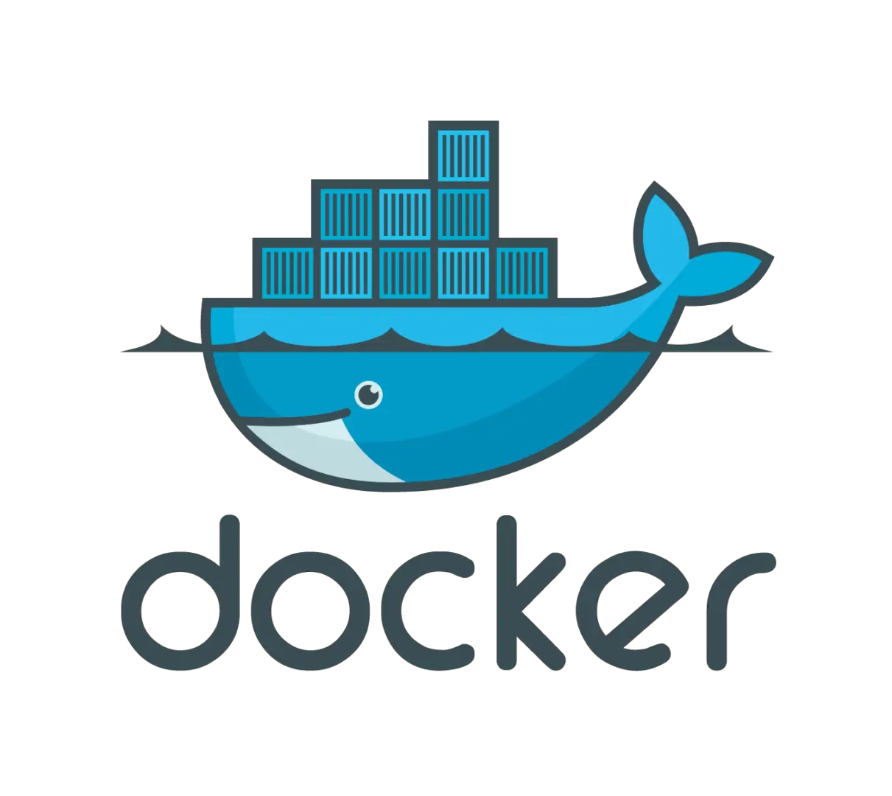

Getting started
In this course, we will be using a virtual computing envionment to set up the resources and tools we need. This will allow us to work in a consistent environment, where we can be sure that all the tools we need are available and working.
What is a virtual computing environment?

A virtual computing environment is a way of setting up a computer that is isolated from your main computer. This means that you can install software and make changes to the environment without affecting your main computer. It also means that you can share your environment with others, so that they can use the same tools and resources as you.
I have build and will share with you a virtual computing environment that contains all the tools we need for this course. This environment is based on Docker, which is a tool for creating and managing virtual computing environments.
To be able to use this environment, you will need to install Docker on your computer. Navigate to the Docker website and follow the instructions for installing Docker on your computer.
Setting up the virtual computing environment
Once you have Docker Desktop up and running, the next step is to download the virtual computing environment that I have created for this course. This is called a Docker image, and it contains all the tools and resources we need for this course. We will navigate to the “Images” tab in Docker Desktop and search for the image called francojc/lin-380. Once you have found it, click on the “Pull” button to download the image.

Once the image has been downloaded, you will see it in the list of images in Docker Desktop. You can now click on the “Run” button to build a container based on this image.
You will need to fill out the following configuration options:
- Name: Give your container a name. This can be anything you like.
- Ports: This is where you can specify which ports on your computer should be accessible from inside the container. We will be using port 8787 for RStudio Server, so you can enter
8787in the “Local Port” field and8787in the “Container Port” field. - Volumes: This is where you can specify which folders on your computer should be accessible from inside the container. On the left hand side, click on the “Add” button and select the folder where you want to store your work for this course. On the right hand side, enter
/home/rstudio/Workpaceas the path inside the container. - Environment variables: This is where you can specify environment variables that will be available inside the container. We will be using an environment variable called
PASSWORDto set the password for RStudio Server. On the left hand side, type ‘PASSWORD’ in the “Key” field and the password you want to use in the “Value” field.
Once you have filled out all the configuration options, click on the “Run” button.

This will start a virtual computing environment that contains all the tools and resources we need for this course. To access this environment, open the “Containers” tab in Docker Desktop, find the container you just created, and click the link 8787:8787 under “Port(s)”. This will open RStudio Server in your web browser.You will be prompted to log in to RStudio Server. Use the username rstudio and the password you specified in the configuration options.

Sharing files between your computer and the virtual computing environment
Your computer is what is known as the “Host”. The virtual computing environment is attached, but isolated from your computer. This is a great benefit to virtual computing so that you can install software and make changes to the environment without affecting your main computer. The downside of this isolation is that the virtual computing environment does not have access to the files on your computer, by default.
However, when you created the container, you specified a folder on your computer (“Host path”) that should be accessible from inside the container through the /home/rstudio/Workspace folder (“Container path”). This is known as a “Volume”. This connection between your computer and the virtual computing environment is the only way to share files between the two directly.

This connection between Host path and Container path is a two-way street. This means that any files you create in the /home/rstudio/Workspace folder inside the container will be available in the folder you specified on your computer. Similarly, any files you create in the folder you specified on your computer will be available in the /home/rstudio/Workspace folder inside the container.